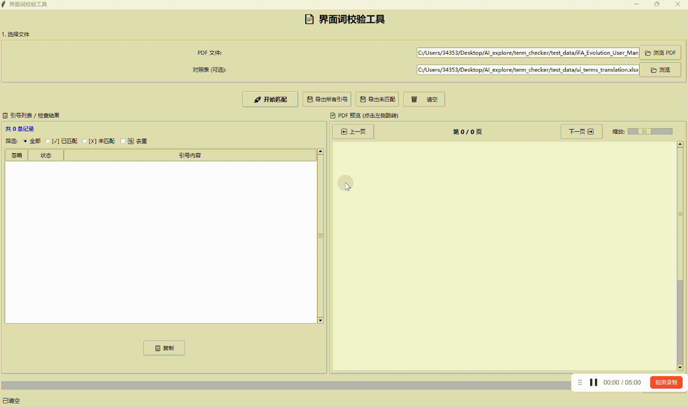

效果
软件主界面

左侧提取结果列表 + 右侧 PDF 原位预览，所见即所得
| 区域 | 说明 |
|---|---|
| 选择文件 | 选择待检查的 PDF 文件；可选填中英对照表（Excel/CSV） |
| 操作按钮 | 开始匹配、导出所有引号、导出未匹配、清空 |
| 引号列表 / 检查结果 | 展示提取的界面词及匹配状态，支持按 全部/已匹配/未匹配 筛选、去重、忽略标记、复制 |
| PDF 预览 | 点击左侧列表项自动跳转对应页并高亮，支持翻页和缩放 |
| 统计单词数 | 统计当前筛选列表中的单词总数和字符总数 |
| 状态栏 | 实时显示当前操作进度 |
匹配状态颜色标识
🟩 淡绿色行
该界面词在对照表中找到标准翻译（已匹配）
该界面词在对照表中找到标准翻译（已匹配）
🟥 淡红色行
对照表中不存在该界面词（未匹配，需补充术语表）
对照表中不存在该界面词（未匹配，需补充术语表）
⚪ 灰色行
被手动标记忽略的项
被手动标记忽略的项
智能过滤逻辑
工具并非简单提取引号内容，而是经过多层过滤，只保留真正的界面词：
- 上下文判断：引号前后 10 个单词内需包含交互关键词（click、button、window、select 等）
- 排除规则：自动排除驼峰命名（代码变量）、不含字母的内容、全小写内容、Title Capital 格式、含
>符号的内容 - 上下文排除：上下文包含 icon、see、section、chapter 等词时排除
- 换行修复：
but- ton→button
操作演示

完整操作流程：选择 PDF → 选择对照表 → 开始匹配 → 定位核对 → 导出结果